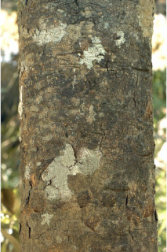
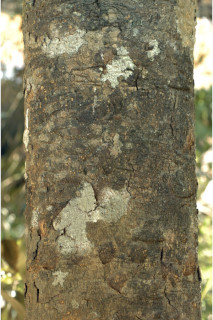
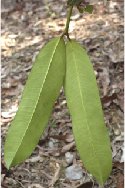
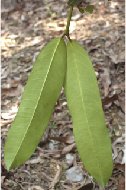
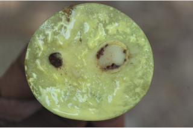
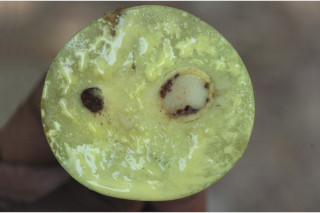

Trees up to 14 m tall.
14 ಮೀ ಎತ್ತರದವರೆಗೆ ಬೆಳೆಯುವ ಮರಗಳು.
14 മീറ്റര് വരെ ഉയരമുള്ള മരങ്ങള്.
மரங்கள் 14 மீ. உயரம் வரை வளரக்கூடியது.
Bark irregularly flaky; blaze cream.
ತೊಗಟೆ ಕ್ರಮಬಧ್ಧವಾಗಿರದ ಚಕ್ಕೆ ರೂಪದಲ್ಲಿನ ಮಾದರಿ -ಯಲ್ಲಿರುತ್ತದೆ; ಕಚ್ಚು ಮಾಡಿದ ಜಾಗ ಕೆನೆ ಬಣ್ಣದಲ್ಲಿರುತ್ತದೆ.
ക്രമരഹിതമായി അടര്ന്നുപോകുന്ന തവിട്ടുനിറത്തിലുള്ള പുറംതൊലി; വെട്ടുപാടിന് ക്രീം നിറമാണ്.
மரத்தின் பட்டை ஒழுங்கற்ற பெரிய செதில்களாக பெயரும் தன்மையுடையது; உள்பட்டை கிரீம் நிறமானது.
Branchlets yellowish, angular, glabrous.
ಕಿರುಕೊಂಬೆಗಳು ಕೋನಯುಕ್ತವಾಗಿದ್ದು,ಹಳದಿ ಬಣ್ಣ ಹೊಂದಿದ್ದು ರೋಮರಹಿತ ವಾಗಿರುತ್ತವೆ.
അരോമിലവും, കോണോടുകൂടിയതുമായ, മഞ്ഞ നിറത്തിലുള്ള ഉപശാഖകള്.
சிறிய நுனிக்கிளைகள் மஞ்சள் நிறமானவை, குறுக்குவெட்டுத் தோற்றத்தில் கோணங்களுடையது, உரோமங்களற்றது.
Latex yellowish white.
ಸಸ್ಯಕ್ಷೀರ ಹಳದಿ ಮಿಶ್ರಿತ ಶ್ವೇತ ಬಣ್ಣ ಹೊಂದಿರುತ್ತದೆ .
മഞ്ഞകലര്ന്ന വെളുപ്പ് നിറത്തിലുള്ള സ്രവം.
மஞ்சள் கலந்த வெண்மை நிறமானது.
Leaves simple, opposite, decussate, drooping; petiole stout, angular, horizontally rugose, sheathing at base, 1-3 cm long, glabrous; lamina 10-35 x 4-12 cm, linear-oblong to oblong, sometimes lanceolate, apex acute or slightly acuminate, base rounded or slightly attenuate, margin slightly revolute, thickly coriaceous, drying yellowish or brownish beneath; secondary_nerves many, joining into intramarginal vein; tertiary_nerves obscure.
ಎಲೆಗಳು ಸರಳವಾಗಿದ್ದು,ಕತ್ತರಿಯಾಕಾರದ ಅಭಿಮುಖ ಜೋಡನಾ ವ್ಯವಸ್ಥೆಯಲ್ಲಿರುತ್ತವೆ ಹಾಗೂ ಜೋತಾಡುತಿರುತ್ತವೆ; ಎಲೆತೊಟ್ಟುಗಳು 1 ರಿಂದ 1.8 ಸೆಂ.ಮೀ. ಉದ್ದ ಹೊಂದಿದ್ದು, ಕೋನಯುಕ್ತವಾಗಿದ್ದು,ದೃಢವಾಗಿದ್ದು, ರೋಮರಹಿತವಾಗಿದ್ದು ಅಡ್ಡಡ್ಡವಾದ ಮಡಿಕೆಗಳನ್ನು ಹೊಂದಿದು, ರೋಮರಹಿತವಾಗಿರುತ್ತವೆ ಹಾಗೂ ಬುಡಭಾಗದಲ್ಲಿ ಒರೆಯನ್ನು ಹೊಂದಿರುತ್ತವೆ; ಎಲೆಪತ್ರಗಳು 10 -35 X 4 –12 ಸೆಂ.ಮೀ ಗಾತ್ರ,ರೇಖಾತ್ಮಕ ಚತುರಸ್ರದಿಂದ ಚತುರಸ್ರಾಕಾರದವರೆಗಿನ ಆಥವಾ ಕೆಲವು ವೇಳೆ ಭರ್ಜಿಯ ಆಕಾರವನ್ನೂ ಹೊಂದಿರುತ್ತವೆ, ಎಲೆಯ ತುದಿ ಚೂಪಾಗಿ ಅಥವಾ ಸ್ವಲ್ಪಮಟ್ಟಿಗೆ ಕ್ರಮೇಣ ಚೂಪಾಗುವ ಮಾದರಿಯಲ್ಲಿದ್ದು ಬುಡ ದುಂಡಾದ ಅಥವಾ ಸ್ವಲ್ಪಮಟ್ಟಿಗೆ ಒಳಬಾಗಿದ ತಳವುಳ್ಳ ಮಾದರಿಯದ್ದಾಗಿರುತ್ತದೆ, ಎಲೆಯ ಅಂಚು ಸ್ವಲ್ಪಮಟ್ಟಿಗೆ ಹಿಂಸುರುಳಿಯಾಗಿರುತ್ತದೆ, ಎಲೆಗಳು ದಪ್ಪನೆಯ ತೊಗಲ್ಲನ್ನೋಲುವ ಮಾದರಿಯಲ್ಲಿದ್ದು ಒಣಗಿದಾಗ ಹಳದಿ ಅಥವಾ ಕಂದು ಬಣ್ಣ ಹೊಂದಿರುತ್ತವೆ; ಎರಡನೇ ದರ್ಜೆಯ ನಾಳಗಳು ಹೆಚ್ಚಿನ ಸಂಖ್ಯೆಯಲ್ಲಿದ್ದು ಅಂತರ ಅಂಚಿನ ನಾಳಗಳೊಂದಿಗೆ ಸೇರಿಕೊಳ್ಳುತ್ತವೆ; ಮೂರನೇ ದರ್ಜೆಯ ನಾಳಗಳು ಅಸ್ಪಷ್ಟ.
തൂങ്ങിക്കിടക്കുന്ന, സമ്മുഖ ഡെക്കുസേറ്റ് ക്രമത്തിലുള്ള ലഘുപത്രങ്ങള്; 1 സെ.മി മുതല് 3 സെ.മി വരെ നീളവും, അരോമിലവുമായതും, തിരശ്ചീനമായി റൂഗോസ് രോമിലമായ, കോണോടുകൂടിയതും, കീഴറ്റത്ത് പോളയോടുകൂടിയതുമായ, ദൃഢമായ ഇലഞെട്ട്; പത്രഫലകത്തിന് 10 സെ.മി മുതല് 35 സെ.മി. വരെ നീളവും 4 സെ.മി. മുതല് 12 സെ.മി വീതിയും, രേഖീയ-ആയതാകാരം തൊട്ട് ആയതാകാരം വരെയും, ചിലപ്പോള് കുന്താകാരം, പത്രാഗ്രം നിശിതമോ ചെറുവാലോടുകൂടിയതോ ആണ്, പത്രാധാരം വൃത്താകാരമോ, ചെറുതായി നേര്ത്തവസാനിക്കുന്നതോ ആണ്, അരികുകള് ചെറുതായി പിന്നാക്കം മടങ്ങിയത് ആണ്, കട്ടിയേറിയ ചര്മ്മില പ്രകൃതം, ഉണങ്ങുമ്പോള് കീഴ്ഭാഗം മഞ്ഞനിറമോ തവിട്ടുനിറമോ ആണ്; അന്തര് സിമാന്ത സിരകളുമായി ചേരുന്ന ധാരാളം ദ്വിതീയ ഞരമ്പുകള്; ത്രിതീയ ഞരമ്പുകള് അപ്രസക്തം.
இலைகள் தனித்தவை, எதிரடுக்கமானவை, குறுக்குமறுக்கமானவை, தொங்கியவை; இலைக்காம்பு தடித்தது, கோணங்களுடையது, சுருக்க கோடுகளுடையது (ரூக்கோஸ்), தளத்தில் உறை போன்ற அமைப்புடையது, 1-3 செ.மீ. நீளமுடையது, உரோமங்களற்றது; இலை அலகு 10-35 X 4-12 செ.மீ. கோட்டு-நீள்சதுர வடிவம் முதல் நீள்சதுர வடிவானது, சிலசமயங்களில் ஈட்டி வடிவானது, அலகின் நுனி கூரியது அல்லது சிறிது அதிக்கூரியது, அலகின் தளம் வட்டமானது அல்லது சிறிது அட்டனுவேட், அலகின் விளிம்பு பின்புறம் சிறிது வளைந்து (ரெவலுட்) காணப்படும், தடித்த கோரியேசியஸ், உலரும் போது இலையின் பின்புறம் மஞ்சள் அல்லது ப்ரவுன் நிறமடைகிறது; இரண்டாம் நிலை நரம்புகள் அதிகமானவை, விளிம்பிலுள்ள நரம்புடன் (இண்ட்ராமார்ஜினல் நரம்பு) இனைந்தவை; மூன்றாம் நிலை நரம்புகள் அற்றவை.
Flowers dioecious, in fascicles, axillary or on older branches.
ಗಂಡು ಮತ್ತು ಹೆಣ್ಣು ಹೂಗಳು ಪ್ರತ್ಯೇಕ ಸಸ್ಯಗಳಲ್ಲಿರುತ್ತವೆ ಮತ್ತು ಅಕ್ಷಾಕಂಕುಳಿನಲ್ಲಿ ಅಥವಾ ಅತಿವಯಸ್ಸಾದ ಕವಲುಗಳ ಮೇಲಿನ ಗುಚ್ಛಗಳಲ್ಲಿರುತ್ತವೆ.
മൂത്ത ശാഖകളിലോ കക്ഷങ്ങളിലോ ഉള്ള കൂട്ടങ്ങളായി, ആണ്-പെണ് പൂക്കള് വെവ്വേറെ മരങ്ങളില് ഉാകുന്നു.
மலர்கள் ஒர்பாலானவை, ஈரகம் கொண்டவை, தொகுப்பானவை; இலைக்கோணங்களில் அல்லது முதிர்ந்த சிறிய கிளைகளில் காணப்படுகின்றன.
Berry, to 6.5 cm diameter, subglobose, 1-2 seeded.
ಬೆರ್ರಿ ಗಳು 6.5 ಸೆಂ.ಮೀ ವಯಾಸ ಹೊಂದಿದ್ದು ಒಂದರಿಂದ ಎರಡು ಬೀಜವನ್ನೊಳಗೊಂಡಿರುತ್ತವೆ.
കായ ഒന്നോ രാേ വിത്തോടുകൂടിയതും, 6.5 സെ.മി വരെ വ്യാസമുള്ളതുമായ ഉപഗോളാകാര ബെറിയാണ്.
முழுச்சதைகனி (பெர்ரி), 6.5 செ.மீ. குறுக்களவுடையது, கோளவடிவானது, 1-2 விதையுடையது.
 



 


 
